4.1.27. Lpro: spatial broadening model¶
This multiplicative model broadens an arbitrary additive component with an arbitrarily shaped spatial profile, in the case of dispersive spectrometers such as the RGS of XMM-Newton. In many instances, the effects of a spatially extended source can be approximated by making use of the fact that for small off-axis angles
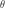
the expression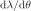
is almost independent of wavelength . This holds for example for the RGS of
XMM-Newton (for which
. This holds for example for the RGS of
XMM-Newton (for which
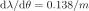
Å/arcmin, with the spectral order).
the spectral order).
We can utilize this for a grating spectrum as follows. Make an image
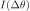
of your source projected onto the dispersion axis, as a function of the off-axis angle . From the
properties of your instrument, this can be transformed into an intensity
. From the
properties of your instrument, this can be transformed into an intensity
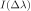
as function of wavelength using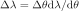
. Assume that the spatial profile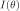
is only non-zero within a given angular range (i.e. the source has a finite extent). Then we can transform into a probability distribution with
with 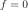
for very small or large values of (here and further we put
(here and further we put
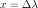
). The auxilliary task rgsvprof (see Rgsvprof) is able to create an input file for the lpro component from a MOS1 image.The resulting spatially convolved spectrum
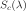
is calculated from the original spectrum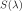
as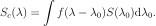
The function must correspond to a probability function,
i.e. for all values of we have

and furthermore

In our implementation, we do not use but instead the
cumulative probability density function  , which is related
to by
, which is related
to by

where obviously  and
and  . The reason
for using the cumulative distribution is that this allows easier
interpolation and conservation of photons in the numerical integrations.
. The reason
for using the cumulative distribution is that this allows easier
interpolation and conservation of photons in the numerical integrations.
If this component is used, you must have a file available which we call
here vprof.dat (but any name is allowed). This is a simple ascii file,
with  lines, and at each line two numbers: a value for
and the corresponding . The lines must be sorted
in ascending order in , and for to be a proper
probability distribution, it must be a non-decreasing function i.e. if
lines, and at each line two numbers: a value for
and the corresponding . The lines must be sorted
in ascending order in , and for to be a proper
probability distribution, it must be a non-decreasing function i.e. if
 for all values of
for all values of  between 1 and
between 1 and
 . Furthermore, we demand that
. Furthermore, we demand that  and
and
 .
.
Note that is dimensionless. In addition, we allow for two
other parameters: a scale factor  and an offset
and an offset
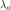
. Usually, , but if is varied the
resulting broadening scales proportional to . This is useful if
for example one has an idea of the shape of the spatial profile, but
wants to measure its width directly from the observed grating spectrum.
In addition, the parameter can be varied if the
absolute position of the source is unknown and a small linear shift in
wavelength is necessary.
, but if is varied the
resulting broadening scales proportional to . This is useful if
for example one has an idea of the shape of the spatial profile, but
wants to measure its width directly from the observed grating spectrum.
In addition, the parameter can be varied if the
absolute position of the source is unknown and a small linear shift in
wavelength is necessary.
Warning
This model can be applied to grating spectra (like RGS), but if you include in your fit also other data (for example EPIC), the same broadening will also be applied to that other data SET. This can be avoided by using a separate sector for each detector type.
Warning
The above approximation of spatially extended sources assumes that there are no intrinsic spectral variations over the surface area of the X-ray source. Only total intensity variations over the surface area are taken into account. Whenever there are spatial variations in spectral shape (not in intensity) our method is strictly speaking not valid, but still gives more accurate results than a point-source approximation. In principle in those cases a more complicated analysis is needed.
The parameters of the model are:
- s:
Scale parameter
, dimensionless. Default value: 1.- dlam:
Offset parameter , in Å. Default value: 0 Å.
- file:
Ascii character string, containing the actual name of the vprof.dat file
Recommended citation: Tamura et al. (2004)